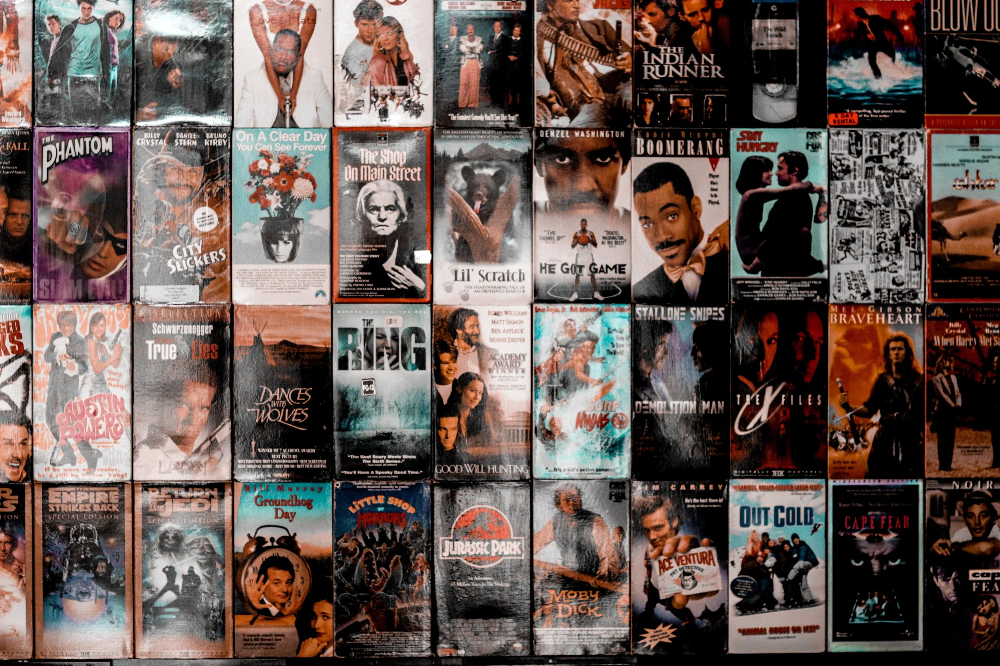
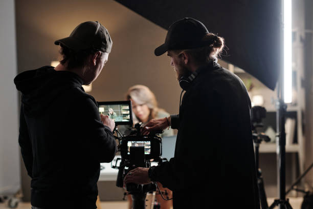

Kas yra filmas?
Filmas – tai audiovizualinis kūrinys, sudarytas iš judančių vaizdų, garso ir muzikos, pasakojantis tam tikrą istoriją, perteikiantis idėjas, emocijas ar įvykius. Filmai kuriami pramogai, menui, informacijai ar mokymuisi.
Daugiau apie filmus
Trumpa filmo kūrimo eiga:
Filmo kūrimo procesas yra gana sudėtingas ir reikalaujantis daug laiko, kūrybiškumo bei komandinio darbo. Sunkiausia dažniausiai būna suderinti filmavimo darbus, aktorių vaidybą ir montažą. Tačiau turint gerą idėją ir stiprią komandą, šis procesas gali būti labai įdomus ir smagus.
- Idėjos kūrimas – sugalvojama filmo tema ir pagrindinė mintis.
- Scenarijaus rašymas – kuriamas filmo siužetas ir dialogai.
- Pasiruošimas filmavimui – parenkami aktoriai, vietos, kostiumai ir rekvizitai.
- Filmavimas – filmuojamos scenos.
- Montavimas – sujungiami kadrai, pridedama muzika ir garso efektai.
- Garso ir vaizdo korekcija– pagerinama filmo kokybė.
- Filmo pristatymas– filmas parodomas žiūrovams kino teatruose ar internete.
